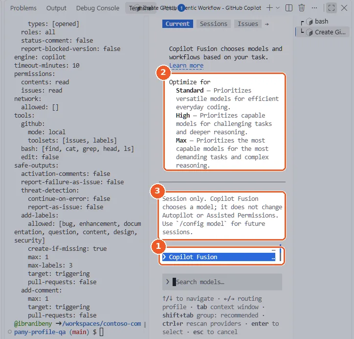
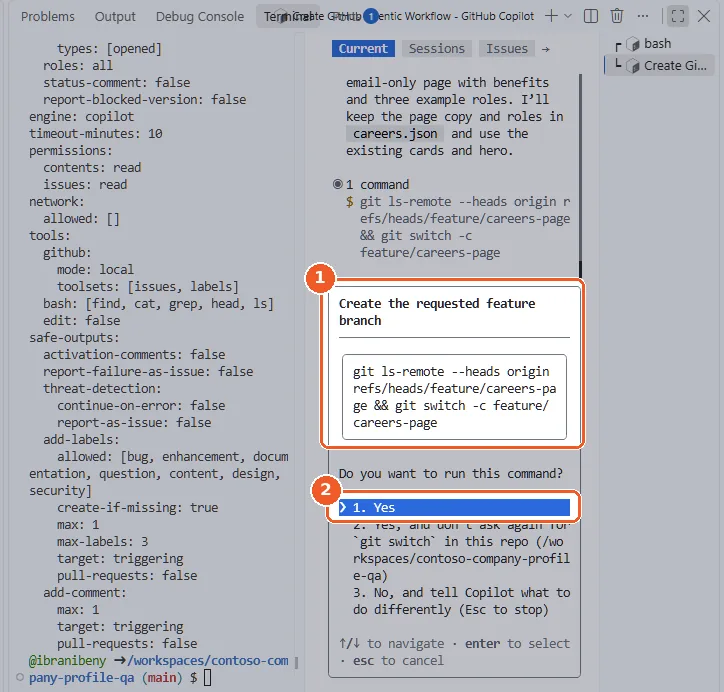
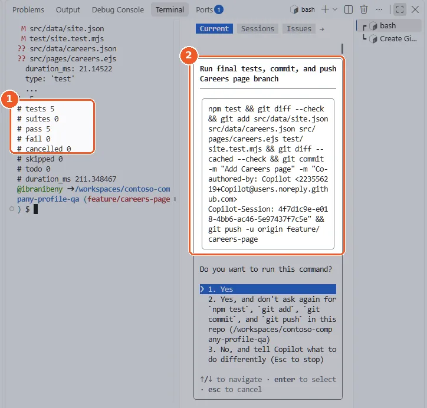
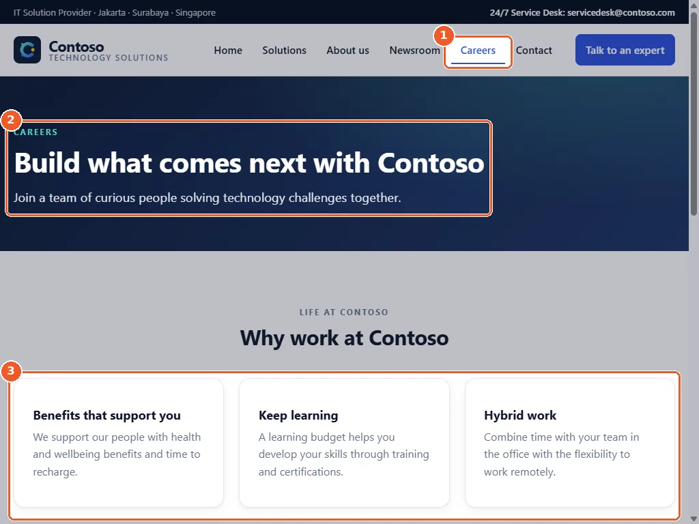

Chapter 3 · about 30 minutes
Build the Careers page with Copilot Fusion
Switch the Copilot CLI to Copilot Fusion and let it implement Lina's issue end to end: branch, code, content, tests and a pull request.
Daniel: “The triage comment is your spec. Don't pick a model, pick Copilot Fusion and let it route the work. I want to know if the result is good enough to merge.”
@ starts a file reference, so @copilot turns into @.github/copilot-instructions.md.Switch the Copilot CLI to Copilot Fusion
In the same codespace terminal, start copilot (or continue the session from Chapter 2) and enter /model. Choose Copilot Fusion and keep the Standard routing profile, which is enough for this feature (← and → switch to High or Max). The choice lasts for this session; /config model keeps it for future sessions.
/modelChoose Copilot Fusion in the list and keep the Standard routing profile.
copilot --model fusionStarts Copilot CLI with Copilot Fusion selected (model name fusion).


- 1In the /model list, Copilot Fusion sits at the top: press Enter to choose it.
- 2Pick the routing profile. Standard is enough here; High and Max favour more capable models.
- 3The choice lasts for this session. /config model keeps it for future sessions.
See Copilot Fusion in GitHub Docs. Your organisation's model policies decide which models Fusion may use.
Why it matters: Fusion routes and combines models for each part of the task, so you stop guessing which single model fits. It is billed in AI credits at the rates of the models it calls.
Hand the issue to Copilot
Point Copilot at the issue rather than re-typing the requirements. The triage comment already lists acceptance criteria and likely files.
Copilot asks before it runs each command, starting with creating the feature/careers-page branch: read the command and choose 1. Yes.
Read the issue titled 'Add a Careers page to the company profile' and the triage comment on it. Create a branch feature/careers-page and implement the Careers page it describes: add it to the main navigation, keep all content in src/data/careers.json, reuse the existing design system, use fictional Contoso data only and extend test/site.test.mjs so the new page is checked. Run npm test until it passes, then commit, push the branch and open a pull request that closes that issue. Do not merge the pull request: it gets reviewed first.

- 1Fusion asks before each command: here it creates the feature/careers-page branch.
- 2Choose 1. Yes to run this one command.
Why it matters: The issue is the single source of truth: business intent from Lina, scoping from the triage agent, implementation by Copilot.
Watch Fusion work, approve as it goes
Copilot reads the issue with the GitHub tools, inspects src/, then edits and creates files. Approve each change after reading the diff, exactly as in Chapter 2.
git status --short
npm testWhile Copilot works, or after it finishes.

- 1Fusion routed this medium-complexity task to a smaller model.
- 2The files it changed: site.json, careers.json, careers.ejs and the site test.
- 3The session counter shows the AI credits used so far.


- 1npm test: 5 tests, 5 pass, 0 fail.
- 2Fusion runs the tests again, commits with a Co-authored-by trailer and pushes the branch, after you approve.
Why it matters: You are reviewing a plan and diffs, not typing code. The tests are the objective check that nothing else broke.
Preview the Careers page in the codespace
Run the local preview and open the forwarded port 8080: select Open in Browser in the pop-up, or the globe icon in the Ports tab. The first time, GitHub signs you in to the forwarded address. Check the navigation, the content and the apply link.
npm run build && npm run serveThen select Open in Browser in the pop-up, or the globe icon next to port 8080 in the Ports tab. Press Ctrl+C to stop the preview.


- 1Careers now appears in the main navigation.
- 2The hero Fusion built from the issue.
- 3Three benefit cards from careers.json.
Open the pull request
Copilot pushes feature/careers-page and opens a pull request that closes the Careers issue. The CI workflow runs the tests on it.
gh pr view feature/careers-page --web
gh pr checks feature/careers-page --watchOpens the pull request, then follows CI until it is green. Do not merge yet: Copilot reviews it in Chapter 4.
ISSUE=$(gh issue list --state all --search "Careers page in:title" --json number --jq '.[0].number')
git push -u origin feature/careers-page
gh pr create --base main --head feature/careers-page --title "Add a Careers page" --body "Closes #$ISSUE"Only if Copilot did not push the branch and open the pull request itself.

- 1Fusion opens the pull request with gh pr create and links it to the issue.
- 2Pull request #2 closes issue #1 and stays open for review: it is not merged.
Why it matters: Agent work lands as a normal pull request: the same checks, reviews and branch rules apply as to human work.
Checkpoint
feature/careers-page is open and not merged, linked to the Careers issue, with CI green.Daniel skims the diff. “Looks right. But I don't merge what nobody reviewed, even if an AI wrote it. Especially if an AI wrote it.”